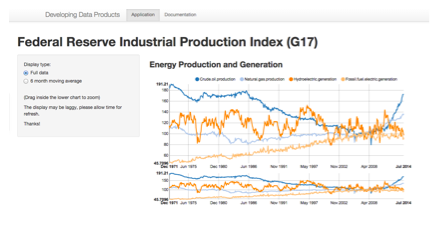

This application is developed using Shiny Apps library and deployed on the RStudio ShinyApps server.
https://hvera.shinyapps.io/EnergyProduction/
- Displays data from the Federal Reserve on oil and energy production
- Uses interactive charts based on the D3 and the nvd3 rCharts support
- Allows selection and de-selection of specific series
Interactive zooming of date ranges
